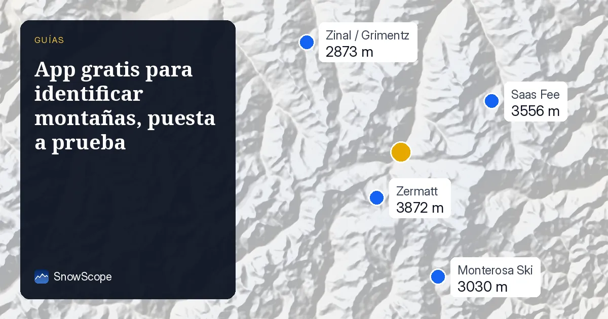

App gratis para identificar montañas, puesta a prueba
Estás en una terraza de Zermatt, en una cresta del Pirineo o en un telesilla de Colorado, y alguien pregunta: ¿qué pico es ese? El buscador de cumbres de la app SnowScope responde a esa pregunta: es una app para reconocer picos que llevas en el bolsillo. Apunta el móvil a las montañas y dibuja la silueta de las cumbres y escribe sus nombres en la pantalla, con su altura, a qué distancia están y cuánto se tarda más o menos en subir a pie. La descarga es gratis, funciona sin conexión cuando ya tienes la región en el móvil, y ver el nombre de todos los picos cuesta un único pago de 0,99 € (0,99 $ en Estados Unidos), sin suscripción. También hemos comprobado cuántas veces acierta, y este artículo muestra las cifras, incluso dónde todavía falla.
Consulta la previsión de nieve en tiempo real de Zermatt en la app SnowScopeEspesor de nieve, alertas de nieve polvo y mapa 3D, gratis.

Qué hace el buscador de cumbres
Abre SnowScope, toca la cámara y elige Picos. La app detecta dónde estás y hacia dónde mira el móvil, y dibuja la línea de las montañas sobre la imagen de la cámara. Cada cumbre a la vista lleva una etiqueta: su nombre, su altura y su distancia. Toca una para fijarla y verás la dirección en grados, el tiempo a pie desde donde estás y la dificultad de la ruta habitual. Desliza para pasar de una cumbre a la siguiente.
Hay varias cosas que lo diferencian de una simple lista de picos cercanos. Las cumbres ocultas tras una cresta más cercana no aparecen como si pudieras verlas; si abres desde el mapa una cumbre que no está a la vista, la ficha te lo dice. La ficha de ruta muestra la subida y la bajada, si volverías antes de la puesta de sol y cuánta nieve hay en el camino, porque SnowScope es ante todo una app de nieve. Puedes hacer una foto o un vídeo corto con los nombres encima y compartirlo.
Cómo funciona, explicado fácil
El buscador de cumbres no adivina a partir de una base de datos de fotos. Reconstruye el paisaje que te rodea a partir de un mapa de alturas del terreno: puntos cada 30 m en un radio de 8 km, cada 90 m hasta 40 km y, más allá, un mapa más ligero, hasta 120 km de distancia. Desde tu posición lanza una línea de visión en cada dirección y se queda con el punto más alto que encuentra. Así obtiene la silueta que deberías ver, y una cumbre solo recibe nombre si sobresale por encima de todo lo que tiene delante. La primera vez que lo usas en un sitio, descarga entre 1 y 3 MB de terreno; después funciona sin cobertura.
Lo difícil es la dirección. La brújula de un móvil se desvía fácilmente por un coche, una barandilla metálica o un remonte, y bastan unos pocos grados para poner el nombre equivocado a un pico: 5° a 10 km son 875 m de lado, a menudo otra cumbre. Por eso el buscador de cumbres no se fía solo de la brújula. Busca en la imagen de la cámara la línea donde el cielo se junta con las montañas y gira la silueta dibujada hasta que las dos coinciden. Una vez fijada, el giroscopio del móvil mantiene las etiquetas estables mientras haces un barrido, y la brújula ya no puede desplazarlas.

¿Qué precisión tiene? Lo que hemos medido
Hicimos tres pruebas y las damos con su tamaño, porque una cifra sin su prueba vale poco.
Prueba 1: qué cumbres están de verdad a la vista. En 14 lugares de los Alpes, los Pirineos y las Montañas Rocosas, desde plazas de pueblo como Zermatt y Grindelwald hasta miradores como la Aiguille du Midi y el Pic du Midi, comparamos las cumbres que muestra la app con un cálculo lento y con todo detalle que usa terreno de 30 m hasta 120 km. De las 5.449 cumbres realmente en línea de visión, la app mostró 5.330 (97,8 %), y el 98,1 % de las cumbres que mostró estaban de verdad a la vista. En los 12 lugares que no son grandes miradores la diferencia es aún menor: 975 de 983 encontradas, 8 de más. Las 97 comprobaciones en cumbres famosas fueron correctas, por ejemplo el Matterhorn desde Zermatt a 8,6 km, el Mont Blanc desde Chamonix a 10,1 km y desde Grenoble a 113 km.
Prueba 2: fotos reales. Hicimos 12 fotos con un móvil en el valle de Ourika y alrededor de Oukaïmeden, en el Alto Atlas de Marruecos, y guardamos con cada una lo que decían los sensores del móvil. 6 fotos tenían una silueta clara. La brújula se equivocaba entre 1,5° y 105,4° (los dos peores, junto al metal de una estación de esquí); la mediana fue de 5°. Tras ajustar la silueta, las 6 se fijaron, con un error mediano de 0,15° y un error máximo de 0,95°. A 10 km, 0,15° son 26 m. Las otras 6 fotos mostraban árboles, un parabrisas o nada de cielo, y la app se negó con razón a fijarse en ninguna. También comparamos cada foto con las siluetas de otros lugares cercanos: 0 fijaciones en 36 intentos, así que no se fija en la montaña equivocada.
Prueba 3: vistas simuladas. Para probar muchas más situaciones de las que podíamos fotografiar, generamos 168 vistas de cámara a partir del terreno en 6 lugares, con nubes, bruma, nieve contra un cielo pálido, sol bajo y objetos delante, y errores de brújula de hasta 100°. Al hacer el barrido, 107 de las 168 se fijaron en más o menos un segundo (64 %), con un error mediano de 0,18°, y ninguna se fijó en el sitio equivocado. El resto se quedó con la brújula, y entonces la app te pide que la calibres.


Lo que nuestras pruebas no demuestran
Son pruebas nuestras, no un análisis independiente. Las fotos reales son pocas, 6 con silueta clara, y todas vienen de un solo móvil en una sola cordillera; los 14 lugares de la prueba 1 comparan dos cálculos hechos con los mismos mapas de alturas y la misma lista de cumbres, así que un error en los propios datos del mapa no se notaría. Los nombres y las alturas vienen de OpenStreetMap, que es muy bueno en los Alpes y más escaso en algunas cordilleras.
El buscador de cumbres necesita ver la silueta. Con niebla, con una nevada fuerte, bajo un cielo gris y bajo con nieve en el suelo, o dentro de un bosque, no puede fijarse y recurre a la brújula; en nuestras vistas simuladas nunca se fijó cuando las laderas nevadas se juntaban con un cielo cubierto del mismo gris. En ese caso, calibra la brújula moviendo el móvil dibujando un 8, como te pide la app, y fíate más de las grandes cumbres que de los pequeños resaltes.
Qué es gratis y cuánto cuesta Pro
La app se descarga gratis y tiene anuncios. En el buscador de cumbres, los usuarios gratuitos ven toda la silueta, la distancia, la altura y el tiempo de subida de cada cumbre a la vista, y los nombres de las 3 cumbres más importantes de la imagen, empezando por la más alta. Cualquier cumbre que abras desde el mapa también conserva su nombre. Los demás picos aparecen como «Pico» más su altura, con un pequeño candado.
SnowScope Pro pone nombre a todos los picos. Es una compra única, sin suscripción: en Google Play cuesta 0,99 $ en Estados Unidos, 0,99 € en los países del euro, 0,99 £ en el Reino Unido, 0,90 CHF en Suiza, 14 kr en Suecia y 13 kr en Noruega, según los precios del 13 de noviembre de 2026. El mismo pago también quita los anuncios y desbloquea los vídeos 3D de tu estación. A algunos usuarios también se les ofrece un vídeo publicitario corto que pone nombre a todos los picos durante 24 horas, gratis.
Comparación con PeakFinder, PeakVisor y PeakLens
PeakFinder, PeakVisor y PeakLens son apps conocidas que hacen bien este trabajo, cada una a su manera, y la tabla resume lo que decían sus propias fichas en la tienda y sus webs el 13 de noviembre de 2026. PeakFinder es una app de pago (5,99 $ en Google Play en Estados Unidos), con un solo pago y sin anuncios; conoce más de 1.000.000 de picos en todo el mundo, dibuja paisajes de hasta 300 km de distancia y funciona totalmente sin conexión. PeakVisor se descarga gratis y tiene una mejora PRO de pago por suscripción, añade mapas 3D, senderos y seguimiento GPS, y dice cubrir más de un millón de montañas. PeakLens se descarga gratis y es obra de un equipo de investigación del Politecnico di Milano; como SnowScope, compara la imagen de la cámara con un modelo del terreno para corregir los errores de la brújula, y recoge más de 200.000 picos.
En qué se diferencia SnowScope: cuesta 0,99 $ en un solo pago para todos los nombres, y puedes usarlo gratis con 3 nombres; añade el tiempo de subida, la ruta y la nieve en el camino; y la misma app te da la previsión de nieve, el espesor de nieve y los niveles de peligro de aludes de la montaña que estás mirando. En qué se queda corto: cubre 7 regiones de montaña, no todo el mundo, y su lista de 164.051 cumbres con nombre es más pequeña que las listas mundiales de las demás.
Consejos para obtener los mejores resultados
Colócate donde veas cielo despejado por encima de las crestas y sujeta el móvil en vertical a la altura de los ojos. Haz un barrido lento por el paisaje durante un segundo o dos: el ajuste funciona mejor cuando ve una silueta larga y recortada. Aléjate de coches, barandillas metálicas y torres de remontes antes de empezar. Si la app dice que hay que calibrar la brújula, mueve el móvil dibujando un 8. Antes de una salida sin cobertura, descarga tu región una vez con wifi desde la pantalla sin conexión del buscador de cumbres.
Dónde funciona
El buscador de cumbres funciona en las 7 regiones de montaña que cubre SnowScope: los Alpes (79.564 cumbres con nombre), los Pirineos (13.506), Escandinavia (21.133), el oeste de Estados Unidos (34.720), el noreste de Estados Unidos (6.786), el oeste de Canadá (7.672) y el Atlas de Marruecos (670). Una región entera para usar sin conexión ocupa entre 25 MB (los Pirineos) y 401 MB (el oeste de Estados Unidos); también puedes usar la cámara con conexión y guarda lo que descarga.
¿Cuál es la mejor app gratis para identificar montañas?
Depende de dónde hagas senderismo o esquíes. Si estás en los Alpes, los Pirineos, Escandinavia, el oeste o el noreste de Estados Unidos, el oeste de Canadá o el Atlas, SnowScope se usa gratis con los 3 nombres principales de la imagen y cuesta 0,99 $ en un solo pago para verlos todos. Para otras cordilleras, una app mundial como PeakFinder o PeakVisor cubre más terreno.
¿Hay alguna app que reconozca montañas con la cámara?
Sí. SnowScope, PeakFinder, PeakVisor y PeakLens ponen los nombres de las montañas sobre la imagen de la cámara. SnowScope además ajusta la silueta dibujada a la real de la imagen, para que los nombres sigan sobre los picos correctos aunque la brújula se equivoque.
¿Es SnowScope una alternativa gratis a PeakFinder?
En las regiones que cubre, sí: la descarga es gratis, la silueta y 3 nombres son gratis, y todos los nombres cuestan 0,99 $ en un solo pago, sin suscripción. PeakFinder es una app de pago que cubre todo el mundo.
¿El buscador de cumbres funciona sin conexión?
Sí. Descarga tu región una vez desde la pantalla sin conexión del buscador de cumbres, o usa primero la cámara con conexión: lo que descarga se queda en tu móvil. El GPS funciona sin cobertura móvil.
¿Por qué a veces los nombres salen en el sitio equivocado?
Normalmente la brújula está alterada o la silueta queda tapada por nubes o árboles, así que la app no puede ajustarla. Apunta a una cresta despejada, haz un barrido lento y calibra la brújula. Las cumbres marcadas como parcialmente ocultas solo asoman por encima de una cresta más cercana.
¿Está disponible para iPhone?
Por ahora, el buscador de cumbres está en la app SnowScope de Google Play para móviles Android.
Consejos para esquiadores
- Haz un barrido lento sobre una silueta clara y recortada durante un segundo o dos: es entonces cuando los nombres se fijan.
- Aléjate de coches, barandillas y torres de remontes, y calibra la brújula dibujando un 8 si la app te lo pide.
- Descarga tu región con wifi antes de una salida sin cobertura.
- Con niebla o un cielo gris y plano, fíate más de las grandes cumbres que de los pequeños resaltes.
Más mapas (sitios externos)
Referencias y créditos
- Google Play: SnowScope: Snow & Powder (precios de SnowScope Pro consultados el 13 de noviembre de 2026) play.google.com/store/apps/details?id=snowruler.app&utm_source=snowscope_blog&utm_medium=blog&utm_campaign=peakfinder
- PeakFinder en Google Play (precio y funciones, consultado el 13 de noviembre de 2026) play.google.com/store/apps/details?id=org.peakfinder.area.alps
- PeakFinder: la app móvil (web oficial) www.peakfinder.com/mobile/
- PeakVisor en Google Play (consultado el 13 de noviembre de 2026) play.google.com/store/apps/details?id=tips.routes.peakvisor
- PeakVisor (web oficial) peakvisor.com/
- PeakLens en Google Play (consultado el 13 de noviembre de 2026) play.google.com/store/apps/details?id=com.peaklens.ar
- PeakLens (web oficial) www.peaklens.com/
- Copernicus DEM GLO-30 y GLO-90 (Agencia Espacial Europea) spacedata.copernicus.eu/collections/copernicus-digital-elevation-model
- Colaboradores de OpenStreetMap (nombres y alturas de las cumbres, ODbL) www.openstreetmap.org/copyright
Sobre estas cifras
Prueba 1: 14 lugares, el terreno de la app (30 m hasta 8 km, 90 m hasta 40 km, más grueso hasta 120 km) y su lista de cumbres frente a un cálculo completo a 30 m hasta 120 km (Copernicus DEM GLO-30) con las mismas cumbres (OpenStreetMap); una cumbre cuenta como a la vista cuando sobresale por encima del terreno que tiene delante. Prueba 2: 12 fotos de un móvil Android (23 de octubre de 2026), con la dirección real de cada una hallada sin conexión mediante una búsqueda en todas las direcciones y revisada a ojo; 6 tenían una silueta clara. Prueba 3: 168 vistas de cámara sintéticas desde 6 lugares, 7 escenas, 4 direcciones, errores de brújula de hasta 100°, 6 fotogramas cada una durante el barrido; una fijación es correcta con menos de 1° de dirección y 0,5° de inclinación, y errónea a partir de 2° o 1°. Precios: Google Play, 13 de noviembre de 2026. Competidores: sus fichas en la tienda y sus webs el mismo día.
Citar este informe
Para investigación, docencia o prensa: cifras y gráficos reutilizables libremente bajo CC BY 4.0 con esta cita.
SnowScope (2026), App gratis para identificar montañas, puesta a prueba, https://snowscope.app/blog/es/2026/11/free-peak-finder-app-name-mountains-snowscope.html, consultado el 2026-11-13
SnowScope (Atlas Labs). (2026, November 13). App gratis para identificar montañas, puesta a prueba. SnowScope snow reports. https://snowscope.app/blog/es/2026/11/free-peak-finder-app-name-mountains-snowscope.html
BibTeX
@misc{snowscope2026freepeakfinderappnamemou,
author = {{SnowScope (Atlas Labs)}},
title = {App gratis para identificar montañas, puesta a prueba},
year = {2026},
month = nov,
howpublished = {\url{https://snowscope.app/blog/es/2026/11/free-peak-finder-app-name-mountains-snowscope.html}},
note = {Published 2026-11-14 13:29 UTC; accessed 2026-11-13}
}· CC BY 4.0 · Métodos, datos y herramientas →
Sigue Zermatt
Gratis: un aviso cuando llega la nieve y la previsión cada mañana.